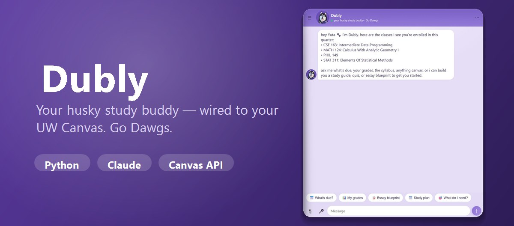

Dubly
A husky-themed study buddy wired to your UW Canvas — chat to see what's due, ask about any syllabus, and generate quizzes, flashcards, and study plans from your course material. Fixing a SQLite concurrency bug across 10 data stores with per-thread connections and WAL mode cut the error rate under load from 35% to 0%, verified by a TDD stress suite; token-level accounting put each turn at $0.0475 and identified prompt caching as a 74% cost reduction.
- Python
- FastAPI
- SQLite
- Next.js
- Claude API
- Whisper